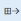

Asset lifecycle states
This topic explains asset lifecycle states and lifecycle models in Asset Management. Asset lifecycle states are used to define whether an asset is active or inactive. For example, you can set up asset lifecycle states such as Created, Active, and Terminated.
Note
- Request lifecycle states are linked to asset lifecycle states. Therefore, when a request is changed to a new request lifecycle state, the asset that is attached to the request is changed to a new asset lifecycle state. For example, if the lifecycle state of a request is changed to Inbound, the lifecycle state of the attached asset is changed to the lifecycle state that is selected in the Inbound lifecycle state field on the Asset lifecycle state FastTab of the Asset lifecycle state models page.
Asset lifecycle states can be set up in asset lifecycle models, where you can define the required lifecycle states for various types of assets. You first set up lifecycle states. You then create a lifecycle model and select lifecycle states for it.
Select Asset management > Setup > Assets > Lifecycle states.
Select New to create a new asset lifecycle state.
In the Lifecycle state field, enter the lifecycle state ID.
In the Name field, enter a description.
The Lifecycle models field shows the number of asset lifecycle models that use the asset lifecycle state.
Set the Active option to Yes if this lifecycle state should be an active lifecycle state (in other words, if work orders can be created for assets that are in this lifecycle state).
Set the Delete open calendar lines option to Yes if open asset calendar lines that have an asset lifecycle state of Created should be deleted when they are in this lifecycle state. This setting is useful if you want to clean up any open maintenance schedules that are no longer relevant for the asset (for example, if the asset is no longer active).
Note
Asset lifecycle states, asset lifecycle models, and asset types are related. They are used in the same way as work order lifecycle states, work order lifecycle models, and work order types.
After you've created the required asset lifecycle states, you can set up lifecycle states in asset lifecycle models.
Select Asset management > Setup > assets > lifecycle models.
Select New to create a new asset lifecycle model.
In the Lifecycle model field, enter the lifecycle model ID.
In the Name field, enter a description.
The Lifecycle states field shows the number of asset lifecycle states that are selected in the asset lifecycle model. The Asset types field shows the number of asset types that use the lifecycle model.
On the Lifecycle states FastTab, select the asset lifecycle states that should be included in the asset lifecycle model:
- To use a lifecycle state for the model, select it in the Lifecycle states remaining section, and then select the right arrow button to move it to the Lifecycle states selected section.
- To use all the available lifecycle states for the model, select the All available lifecycle states button . All lifecycle states are transferred to the Lifecycle states selected section.
- To remove a lifecycle state from the model, select it in the lifecycle states selected section, and then select the left arrow button to move it to the Lifecycle states remaining section.
Select Lifecycle state updates to define the asset lifecycle states that can follow a selected lifecycle state.
You use the Asset state FastTab if you handle assets that you receive for repair. In the Inbound/outbound section, you can select asset lifecycle states to indicate the workflow of an asset that you receive for repair. If you offer loan assets to customers or departments, in the Loan section, you can select lifecycle states for loan assets.